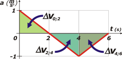
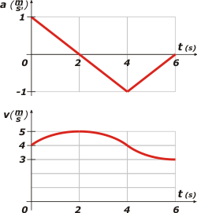
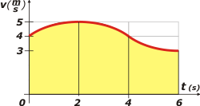

| home | | | más de cinemática | | | otros temas de Física | | | lecciones del maestro Ciruela | | | tonterías | | | @ |
|
 |
|||||||
Hermosísimo ejercicio que tomaron en este examen final. Discriminador de práctica, o sea, los estudiantes que practicaron mucho lo pudieron resolver en 30 segundos y seguir con algún otro ejercicio, y los que no tenían la práctica suficiente deben haber tardado 5 o 6 horas en resolverlo y sin garantía de que les saliese bien. Yo te lo voy a resolver de las dos maneras posibles: primero la forma práctica, el camino directo, pescar la obviedad del asunto y responder en consecuencia. Y después la forma ardua, aplicar todos los conocimientos acerca de las ecuaciones horarias, buscar los valores importantes y alcanzar las mismas respuestas. La clave del asunto consistía en saber un par de cosas. Primero: velocidades positivas significan avances y velocidades negativas, retrocesos. Y segundo el área encerrada bajo la curva de una función cualquiera representa en cambio de su función primitiva. En criollo: el área bajo la curva de aceleración representa el cambio de velocidad. Mirá de nuevo el gráfico de aceleración, que le hice apenas unas modificaciones interesantes: |
||||||||
|  | Esas áreas que sombreé en colores representan los cambios de velocidad en cada intervalo. Son áreas muy fáciles de cacular ya que se trata de simples triángulos (base por altura sobre 2), de modo que cada uno vale |1 m/s|. Y un pequeño detalle más: te fijaste que al resultado de las variaciones les puse signos de módulo, es que las áreas sobre el eje de los tiempos representan incrementos de velocidad y las áreas bajo el eje, decrementos de velocidad. | |||||||
Como conclusión de esto es que se puede afirmar que en el intervalo [0;2s] la velocidad aumenta en 1 m/s, en el intervalo [2s;4s] la velocidad disminuye en 1 m/s y en el intervalo [4s;6s] la velocidad vuelve a dismunuir 1 m/s. Mirá, ahora te voy a representar nuevamente el gráfico de aceleración y abajo (en tándem) el de velocidad. |
||||||||
|  | Las formas cuvilíneas de cada variación son arcos de parábolas (eso no tiene mucha importancia pero ya que te explico el asunto te lo muestro correctamente: la función integral de una recta oblicua es parabólica). Acordate que el enunciado indica que la velocidad en el instante 0 s vale 4 m/s. Al cabo de dos segundos habrá aumentado en 1 m/s, por lo tanto debe valer 5 m/s. Dos segundos más tarde habrá perdido otro 1 m/s, por lo tanto vuelve a valer 4 m/s. Y dos segundos más tarde vuelve a perder otro 1 m/s, por lo tanto su velocidad a los 6 s debe valer 3 m/s. Hay más detalles interesantes que si tenés inquietudes físicas podés llegar a disfrutar. (Tenés un máximo, un mínimo y un punto de inflexión para observar). |
|||||||
| Llegado a este punto ya podés encontrar la respuesta correcta del ejercicio, ya que se ve que en todo el viaje la velocidad tiene valores positivos, de modo que la respuesta correcta es... | ||||||||
|
||||||||
Espero que coincidas conmigo que todos los razonamientos que hicimos hasta ahora, incluso los cálculos, son casi instantáneos e inmediatos. Ni siquiera tenés que gastar el lápiz ni la batería de la calculadora. Sin embargo no está de más que falseemos el resto de las respuestas y hagamos un análisis funcional que nos sirva de lección de física. Pero si llegaste hasta acá y te agarró el cansancio... yo me doy por satisfecho y seguimos siendo amigos. Vamos a falsar el resto de las respuestas y sigamos con el método gráfico. La respuesta b) nos habla de desplazamientos. Con la misma lógica que antes, los desplazamientos los podemos evaluar observando la áreas encerradas bajo la curva de velocidad. Mirá el gráfico: |
||||||||
|  | Ahí tenés las áreas. No son fáciles de evaluar cuantitativamente ya que no se trata de figuras geométricas simples (como triángulos o rectángulos), pero es recontra obvio que el área total (de 0 a 6 s) es mayor que el área parcial (de 0 a 4 s) lo que nos permite asegurar que la respuesta b) es recontra súper falsa. | |||||||
Las áreas entre 0 y 2 y entre 2 y 4 (segundos) son idénticas, aunque las veas en posición simétrica. Por lo tanto es falsa la respuesta c) que dice que un desplazamiento es mayor que otro. La respuesta d) es ridícula, si el móvil siempre avanza... ¿cómo van a ser iguales las posiciones en dos instantes diferentes? La velocidad en el instante 6 s vale 3 m/s, y en el instante 2 s, 5 m/s... la respuesta e) es más falsa que discurso de Macri. Lo mismo para la respuesta f). Si vos no tuviste la práctica suficiente para darte cuenta de que el ejercicio se podía resolver analizando áreas encerradas bajo curvas, entonces, tal vez, podrías intentar resolver la cuestión con ecuaciones horarias. Ya te anticipé que era arduo, no sólo porque hay que integrar sucesivamente para hallar las ecuaciones de velocidad y posición, sino porque cada una de ellas es una función doble (una que describe el comportamiento desde 0 hasta 4 segundos y otra de 4 a 6. Cada una viene en dos tramos diferentes. Además, las constantes de integración del primer tramo son los datos iniciales que aporta el enunciado. Pero las constantes del segundo tramo hay que calcularlas. Bueno, esto ya se puso demasiado largo, así que te propongo que lo resuelvas vos y compares con mis resutados. Para instantes comprendidos entre 0 y 4 s: |
||||||||
| ||||||||